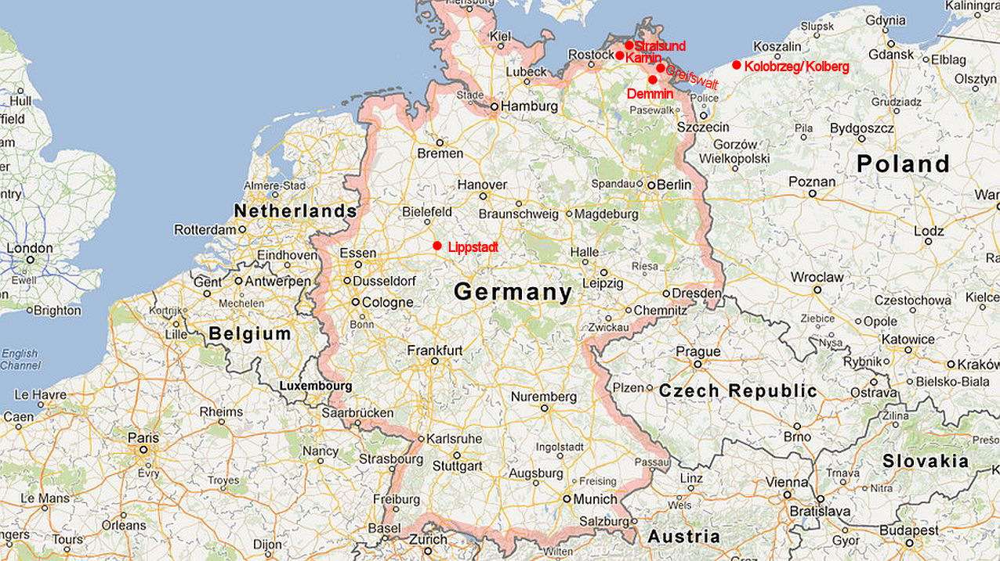
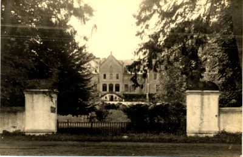
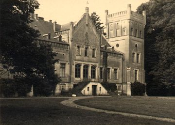

Zwischen den Jahren 1300 und 1500 war der Name HENNING ein populärer Sptzname für "der Sohn des Johannes". Im alten baltischen Dialekt wurde der Hahn "Hen" genannt (hen = männlich, henne = weiblich). Das Baltische (oder Norddeutsche) "ing" wurde hinweislich an den Namen eines Vaters oder Vorfahrens angehangen.
Der Name entstand unter Adligen und Ritter, wie zum Beispiel1:
Während des 13/14th Jahrhunderts breiteten sich diese ersten Hennings über die Gebiete (des heutigen) Deutschlands, Dänemarks und Norwegen aus. Sämtliche Dokumente jeder Zeit wurden leider vernichtet.
|  |
Während des 17th und 18th Jahrhunderts mehrere Hennings zogen anderswohin — auch zur 'neuen' Welt. Heute findet man einen der größten Clans in Süd Afrika. Jedoch finden wir die Henning Familien in fast jedem zivilisierten Staat in der westlichen Welt.
Einige Henning-Nachkommen, verblieben jedoch in der Nähe von Stralsund und Greifswald. Es ist bekannt, daßJacob Henning (der ältere) 1635 in Demmin (Greifswald) geboren wurde. Jacob Henning und seine Nachkommen wurden als Henning Familie von Karnin bekannt. Karnin liegt ungefähr 25 km von Stralsund entfernt. Jacob Henning und seine Nachkommeen waren reiche Grundgutbesitzer, die in einem Schloss wohnten. Dieses Schloss wurde, während des 2.Weltkrieges, 1945 von der kommunistischen Besatzungsmacht, die Ost-Deutschland übernahm, beschlagnahmt. Ingefolge dessen zog diese Familie in verschiedene Provinzen West-Deutschlands um.
|   |
Der Peter Henrich Henning Verband ist der Inhaber dieser Web-Seite.
Die Henning Familien in Süd Afrika sind dokumentarisch nahezu komplettiert und der Stammbaum sowie Chronik sind in der Web-Seite zu ersehen. Der Peter Henrich Henning Familienverband unterhält ein Familienmuseum und Dokumentationszenter/Archiv und gibt alle drei Monate (Februar, Mai, August und November) eine Zeitschrift an Mitglieder aus. Interessante Neuigkeiten für die Familie werden dann bekannt gemacht.
Hennings von anderen Ländern sind eingeladen den Verbands-Sekretär des Peter Henrich Henning Familienverbandes, zwecks Einfügung von Einzelheiten der Familie in die Web-Seite, zu kontaktieren.
1Bahlow H.: "Deutsches Namenlexikon". Familien und Vornamen nach Ursprung und Sinn erklärt. München, 1977, p228